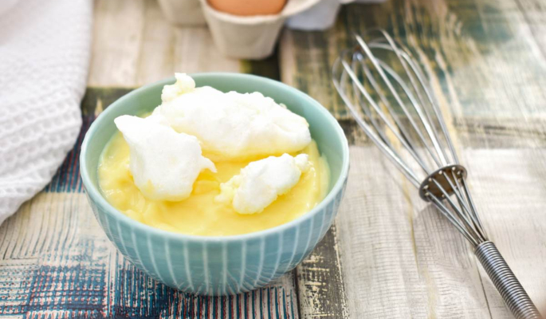

Home
Snenokle

Description
Odvojiti žumanca od belanaca. Sipati mleko u šerpu sa debelim dnom i uključiti ringlu na srednju jačinu.
Ingredients
- litar mleka
- 4 jajeta
- 6 kašika šećera
- 2 kesice vanilin šećera
- 2 pune kašike brašna
Steps
- Odvojiti žumanca od belanaca. Sipati mleko u šerpu sa debelim dnom i uključiti ringlu na srednju jačinu.
- Dok se mleko greje, veoma čvrsto umutiti belanca. Koristiti prvo malu brzinu na mikseru, pa tek onda bržu, da belanci "ne spadnu". Taman dok mleko počne da struji, belanca će biti umućena.
- Smanjiti jačinu ringle na najmanje i u mleko koje struji supenom kašikom ubacivati knedle od ulupanih belanaca. Kad počnu da narastaju, okrenuti ih da se skuvaju i sa druge strane. E sad, meni je npr jako teško da ih okrenem jer se migolje, beže, ali kad ih kad ih tokom kuvanja kašikom prelivam mlekom, malo je lakše.
- Gotove knedle rešetkastom kašikom vaditi iz šerpe i ređati u posudu iz koje ćete služiti.
- Mleko skloniti sa vatre. Žumancima dodati šećer i vanilin šećer pa dobro umutiti, dok ne pobele i počnu da penušaju. Dodati dve krcate kašike brašna i prvo ih lagano umešati varjačom, pa tek onda mikserom.
- U dobijenu smesu uliti kutlaču-dve toplog mleka pa promešati varjačom dok se ne sjedini.
- Mleko vratiti na ringlu, uključiti na tiho, pa uz neprestano mešanje lagano ulivati umućena žumanca. Nastaviti sa mešanjem sve dok se ne dobije željena gustina (treba da se dobije gusti krem).
- Čim krem bude gotov, preliti njime poređane knedle i ostaviti da se dooobro ohladi.